Goal
Learn what each Project Properties tab does, choose a UI theme, set the defaults for new screens and the startup mode, set up the Screen Swapper for unattended displays, and generate the project documentation PDF.
Project Properties cover the project's details, such as project name, customer and site, through to how the project functions: screen defaults, the UI theme and the Screen Swapper. These settings apply to the whole project. The project details become valuable when we look at the documentation PDF generator, which we also do in this chapter.
Screen Properties, the size, colour, background image and access level of each individual screen, get a chapter of their own next.
We continue with our BoilerHouse project. From the Project menu choose Project Properties…
Part 1: General & Info
These are descriptive record-keeping fields. They appear on the title sheet of the project documentation and do not change runtime behaviour.
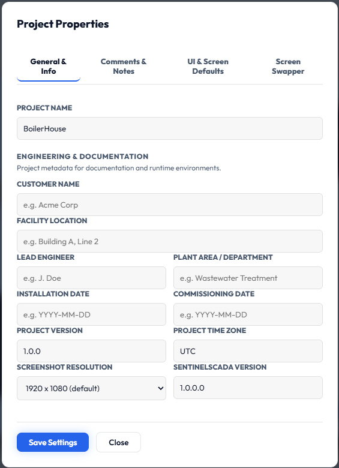
Project Name
The project's identifier. Read-only; it cannot be changed from this dialog.
Customer Name
The customer or organisation the system was built for.
Facility Location
The site or building where the system is installed, for example Building A, Line 2.
Lead Engineer
The person responsible for the project's design.
Plant Area / Department
The process area the project covers, for example Wastewater Treatment.
Installation Date
The date the system was installed on site (YYYY-MM-DD).
Commissioning Date
The date the system was commissioned and put into service (YYYY-MM-DD).
Project Version
The revision number of this project, maintained manually by the engineer (default 1.0.0).
Project Time Zone
The time zone the site operates in, for example America/Chicago, recorded for reference in the project documentation. It is informational only: it does not change how timestamps are generated or displayed. It is free text and is not validated.
Screenshot Resolution
The screen size used when capturing each screen for the documentation PDF (default 1920 x 1080). The list includes portrait sizes, such as 1080 x 1920 and 2160 x 3840, for portrait panels. It does not restrict screen sizes in the designer or at runtime.
SentinelSCADA Version
The platform version the project was built with. Read-only.
Saving All tabs of Project Properties are saved together with the Save Settings button. If authentication is enabled for the project, editing and saving require the Engineer or Admin role; other users see the fields read-only. If authentication is not enabled, anyone with access to the designer can edit these settings. Close closes the dialog and discards unsaved changes.
Part 2: Comments & Notes
On the next tab we can enter some useful notes about the project. Notes are limited to 240 characters; the counter under the box shows how many remain. They are printed on the title sheet of the documentation PDF, which we generate at the end of this chapter.
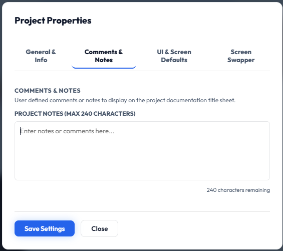
Part 3: UI & Screen Defaults
Here we set the web interface colour theme and the defaults applied whenever a new screen is added.
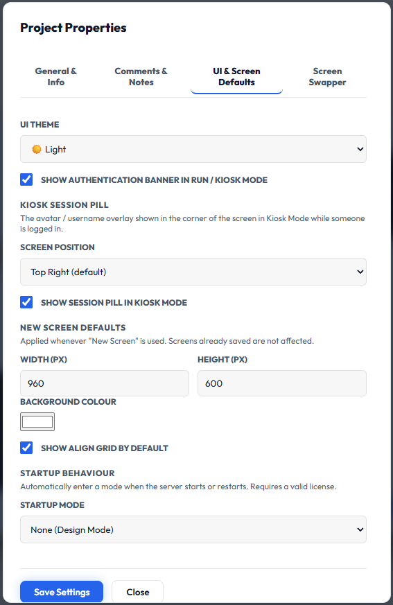
UI theme
The UI THEME sets the colour theme for the whole Sentinel client: menus, panels, dialogs and the screen surround. The theme is saved with the project, so every user who opens it sees the same look.
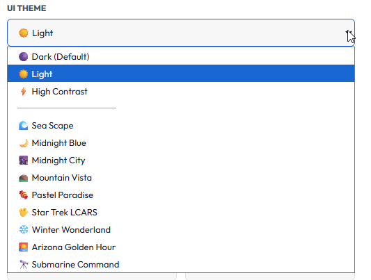
The choices are Dark (the default), Light and High Contrast, followed by Sea Scape, Midnight Blue, Midnight City, Mountain Vista, Pastel Paradise, Star Trek LCARS, Winter Wonderland, Arizona Golden Hour and Submarine Command.
Arizona Golden Hour is a favourite:
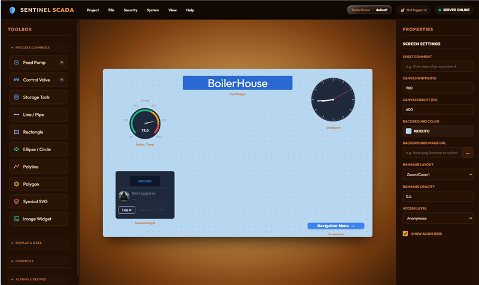
Authentication banner and Kiosk session pill
Show authentication banner in Run / Kiosk Mode
When ticked, the banner showing the logged-in user and login status is displayed in Run or Kiosk Mode. Untick it for a cleaner operator screen. Default: ticked.
Kiosk Session Pill
The small avatar and username overlay shown in a corner of the screen in Kiosk Mode while someone is logged in.
Screen Position
Where the pill appears: Top Left, Top Center, Top Right (default), Bottom Left, Bottom Center or Bottom Right. Choose a spot that does not cover your widgets.
Show session pill in Kiosk Mode
When ticked, the pill is displayed in Kiosk Mode. Untick it to hide it completely. Default: ticked.
New Screen Defaults
These values are applied whenever New Screen is used. Screens that are already saved are not affected.
Width (px) and Height (px)
The default size of a newly created screen (shown here: 960 x 600). Each can be 200 to 4000; a value outside that range is adjusted to the nearest limit when you save. For a portrait panel, make the height larger than the width, for example 1080 x 1920.
Background Colour
The default background colour of a new screen. Click the swatch to pick a different colour.
Show Align Grid by default
When ticked, the alignment grid is switched on in the designer for new screens, helping to line up and snap widgets. Default: ticked.
Startup Behaviour
This automatically enters a mode when the server starts or restarts, which is ideal for unattended panels that must recover on their own after a power loss or reboot. It requires a valid licence. Without one the control is locked, and it can only be changed by Engineer-level users or above.
None (Design Mode)
Starts in the designer, with no automatic mode change. This is the default.
Run Mode
Starts straight into Run mode, so the project is live without anyone pressing Run.
Kiosk Mode (Allows F11)
Starts in Kiosk mode, the full-screen operator view. The user can still toggle full screen with F11.
Kiosk Mode (Locks Windows)
Starts in Kiosk mode with the operator locked in (a "hard" kiosk), so they cannot leave the screen or switch Windows applications.
Part 4: Screen Swapper
Suppose you have a concourse-type installation: no user interaction required, you just want to sequence through a select set of screens over and over. Or perhaps now and then someone can interact and follow a screen trail, then after some inactivity the automated sequence starts again. That is the Screen Swapper.
Note The Screen Swapper runs in Kiosk Mode only. It is available in XML and SQLite security modes, but not in Keycloak mode.
Why not Keycloak? Keycloak mode is the enterprise, 21 CFR Part 11 mode. There is no anonymous or view-only access: someone must sign in before anything is shown, and every action is recorded against that signed-in person. Sessions also expire after a period of inactivity, at which point the client is sent back to the Keycloak login. A swapper exists to run unattended, with nobody there to sign in or to keep a session alive. In this mode that would either be undone by the inactivity timeout, or it would leave a signed-in session running with nobody watching, which is the very situation the timeout is there to prevent. For this reason the Swapper is deliberately disabled in Keycloak mode, and the whole Screen Swapper tab is greyed out.
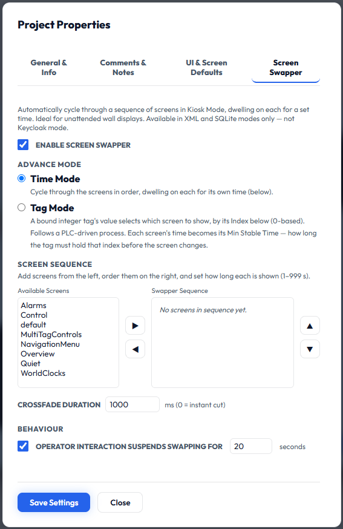
Enable and advance mode
Tick ENABLE SCREEN SWAPPER to turn it on. Untick it to stop automatic cycling; the other settings are kept but not used while it is off. Then choose what decides when the display moves on:
Time Mode
Cycles through the screens in the order of the Swapper Sequence, showing each for its own dwell time. After the last screen it returns to the first.
Tag Mode
A bound integer tag's value selects which screen to show, by its index in the Swapper Sequence (0-based, so 0 is the first screen in the list, 1 the second, and so on). This follows a PLC-driven process, so the PLC decides which screen is displayed. Choose the tag from the Index Tag (integer) drop down that appears when you select Tag Mode; only integer tags are listed. In this mode each screen's time becomes its Min Stable Time: how long the tag must hold that index before the screen changes. This stops the display flickering if the tag value changes briefly.
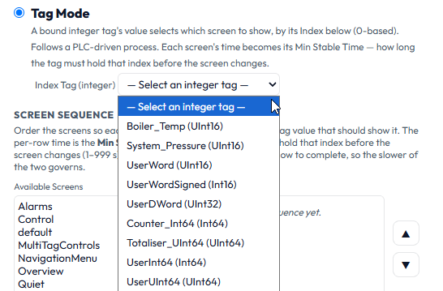
Selecting Tag Mode reveals the Index Tag drop down, listing the integer tags available in the project.
Tag Mode values The swapper always shows a sensible screen. A tag value of 0 or below shows the first screen, and a value above the last index shows the last screen. If the tag has no value yet, for example before communications are established, the swapper holds the current screen. Because index 0 is shown whenever the tag is 0, make the first screen in the sequence a sensible home or overview screen.
Screen sequence
Add screens from the Available Screens list on the left, order them in the Swapper Sequence on the right, and set how long each is shown (1 to 999 seconds).
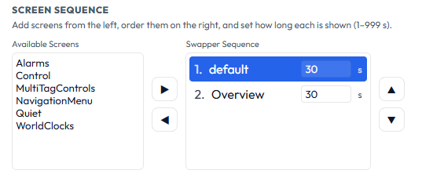
A Time Mode example: the default and Overview screens in the sequence, each shown for 30 seconds.
The swapper needs at least two screens in the sequence; with fewer it will not start.
Access Level The swapper respects each screen's Access Level, which we meet in the next chapter. When Require Authentication is on, it only shows screens the current user is cleared to open. In Time Mode, screens the user cannot open are skipped; if none are open to them, the current screen is held until someone with enough access logs in. In Tag Mode, if the tag names a screen the user cannot open, the current screen is held.
The right arrow adds the selected screen to the sequence, and the left arrow removes it.
The up and down arrows move the selected screen earlier or later. In Time Mode this changes the display order; in Tag Mode it changes the screen's index number.
Crossfade and behaviour
Crossfade Duration
How long, in milliseconds, the fade between two screens takes (shown: 1000 ms). Enter 0 for an instant cut with no fade.
Operator interaction suspends swapping for [ ] seconds
When ticked, swapping pauses as soon as an operator touches or clicks the screen, so the display does not change while they are using it. Swapping resumes automatically after the stated number of seconds with no further activity (shown: 20 seconds). Untick it if the swapper should keep running regardless of operator activity.
Part 5: Generate the project documentation
Once you have finished with the Project Properties dialog, choose Save Settings and/or Close, and we can take a quick peek at the built-in documentation output. A good project works as intended; a great project is well documented, so that future you has a reference to go to, or a customer can preview the design before committing to the effort.
Open the generator
From the Project menu choose Generate Docs… The dialog is mostly self-explanatory. Choose Landscape or Portrait pages, Whole Project or Current Screen Only, and tick the sections you want: Title Sheet, Table of Contents, HMI Screen Layout Renders (with an option to include un-assigned widgets), Device & Driver Setup, Tag & Variable Database, Alarm Configurations, Recipe Sets and Text Lookup Dictionaries.
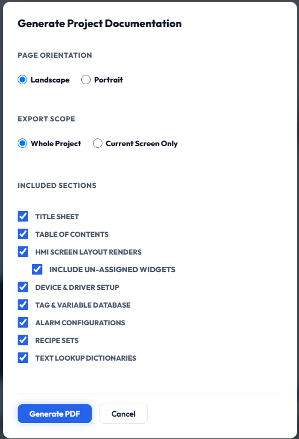
Generate the PDF
For an instant example, just press Generate PDF. The progress bar shows the generation progress. It will take some time, so please stand by.
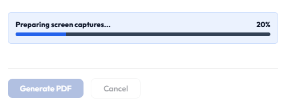
Save it
When ready you are prompted with a Save As dialog.
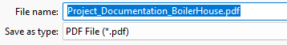
Review the PDF
Once saved, the dialog closes and you are returned to the designer. To review the PDF, find where you saved it and open it there. As a basic example, it contains all the information you selected, fully indexed with clickable links and tables.
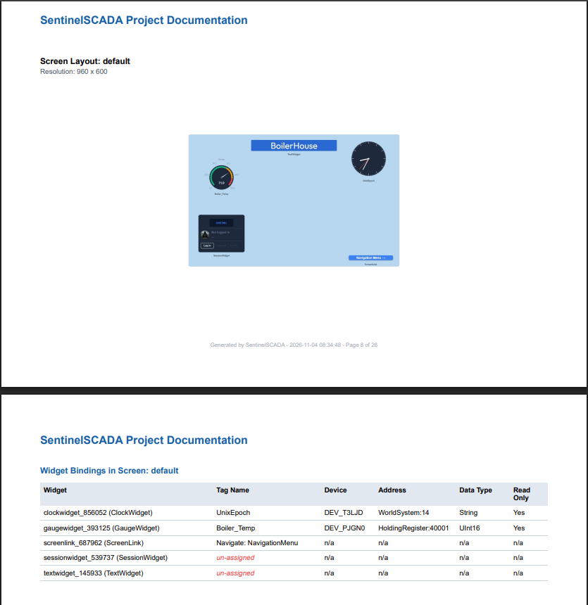
Tip In the widget bindings table, any widget not yet bound to a tag is flagged un-assigned in red. That makes the PDF a handy checklist for finding unfinished work.
Summary
General & Info and Comments & Notes are record-keeping fields that feed the documentation PDF.
The UI theme, New Screen Defaults and Startup Mode are set once for the whole project. Startup Mode needs a valid licence.
The Screen Swapper cycles screens in Kiosk Mode, either on a timer or driven by a PLC tag.
Project > Generate Docs produces an indexed PDF of the whole project.
In this chapter we made a deep dive into Project Properties and the documentation PDF it feeds. In the next chapter we will look at Screen Properties: the settings that apply to each individual screen.